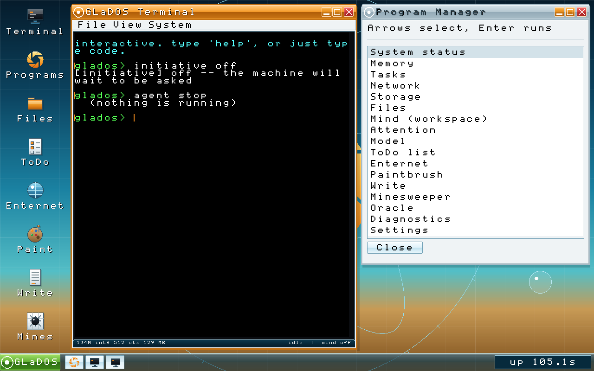
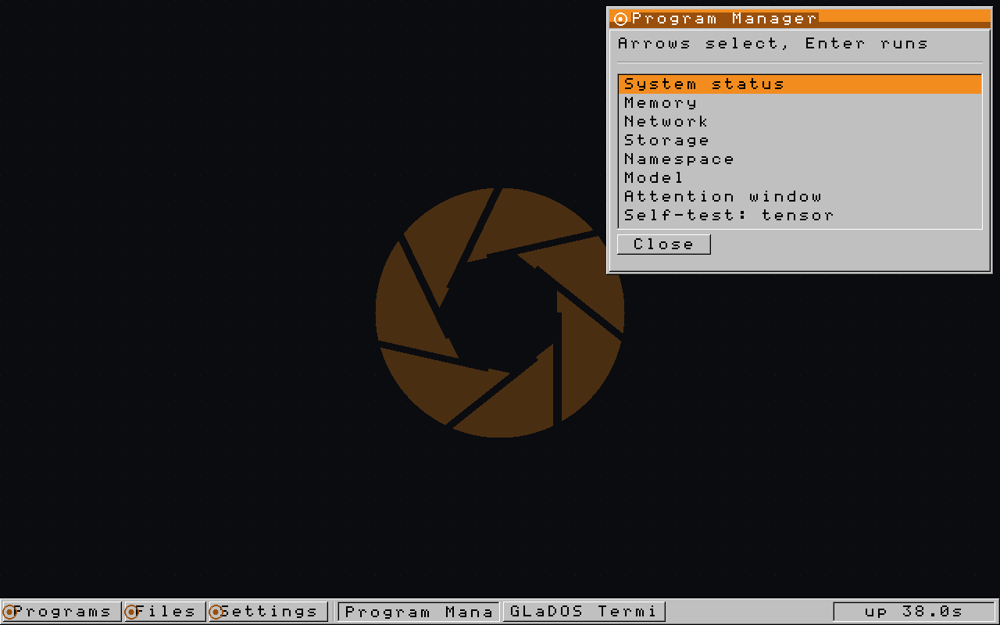

GLaDOS: an operating system in Rust with a language model in the kernel
GLaDOS is an operating system for x86-64, written from scratch in Rust, which boots on bare metal and runs entirely in ring 0. Its distinguishing feature is that a transformer lives in kernel space. The model is compiled into the same binary as the page tables and the disk driver, and shares an address space with both.
That arrangement deletes most of the machinery an AI agent usually needs. There is no userspace to marshal arguments into, no wire format, no dispatcher and no process boundary to cross. When the model decides to run ls, the kernel calls ls, and the call costs what any other function call costs.
The name comes from Portal, and so does the look: amber on black, a boot screen drawn as vector geometry, Windows 3.1 chrome, and a certain institutional cheerfulness on the subject of hazards. What is underneath the paint is ordinary systems work. The TCP/IP stack, the TLS 1.3 client, the NVMe and xHCI drivers, the window manager and the inference code were all written for this project, which comes to 89 files of Rust and about 36,000 lines.
- Download the ISO: Bootable UEFI images with the model baked in. 33 MB to 575 MB.
- Read the wiki: Every subsystem, how it works, and what it cost to find out.
- See it running: The desktop, the shell, and the model answering from ring 0.
- Browse the archive: Mirror-style file index of images, sources and checksums.
- Source on GitHub: 89 files of Rust. All rights reserved, published to be read.




What works
This is a research kernel, so a feature list is only useful with the gaps marked. Both halves are below.
| Subsystem | State |
|---|---|
| Boot | UEFI application, own page tables, GDT/IDT, APIC timer, PS/2 keyboard |
| Memory | Frame allocator, identity paging to 4 GiB, coalescing heap |
| Tasks | Preemptive at 100 Hz, hand-written context switch |
| Graphics | GOP framebuffer, Windows 3.1 desktop, window manager, taskbar |
| Storage | NVMe driver, content-addressed store, Merkle trees, snapshots |
| Network | ARP, IPv4, ICMP, UDP, TCP, DHCP, DNS, TLS 1.3 with chain validation |
| Crypto | SHA-1/256/384, HMAC, AES, ChaCha20-Poly1305, X25519, RSA, ECDSA |
| Model | Qwen3.5-2B, Qwen3-0.6B or SmolLM2-135M, int8, inference in kernel |
| Language | Lexer, parser, interpreter with kernel builtins |
Known limits
- Wireless does not work. The laptop's card is CNVi, which means the MAC sits in the chipset and the M.2 module is only a radio, reachable through an undocumented signed-firmware protocol. The WPA2 supplicant is finished, passes the IEEE 802.11i test vectors at every single boot, and has never been allowed within reach of an antenna. See the USB WiFi work.
- One core. SMP is unimplemented, and the interior-mutability type is called
Racyso that the day it matters, one grep finds every place that has to be revisited. - There is no autonomous agent loop. The model proposes and a keystroke adopts. Given the name over the door, this is arguably the most important design decision in the project.
- TLS validates certificates and then reports the verdict without acting on it, there is no revocation checking, and key material comes from the timestamp counter. Treat the network stack as an instrument, not as armour.
Why it exists
An operating system advertised as AI-powered is usually a chat window with a Linux underneath, which answers a question about product design. The question here is narrower: if the model is a kernel primitive, what actually changes?
Three answers so far, each of which took measuring. Tool calls stop being text: the model names a function and the kernel calls it, with nothing parsed in between. Invalid tool names become unreachable, because the grammar handed to the sampler is compiled from the live applet table, and permissions are enforced by removing applets from that grammar before sampling starts. And the best router in the system is not the transformer: it is a ridge regression published in 1960, reading one hidden state through 12,672 parameters, which beats the 135M model at picking the right applet by a factor of nine and does it without a forward pass.
The last one is the reason the wiki is written the way it is. A project like this generates confident assumptions at a rate that only measurement keeps up with, and several of the pages here exist to record an assumption that lost.